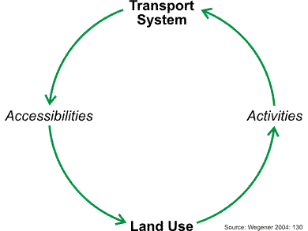

Edit This Page » (opens new window)
Land Use-Transport Modeling
More pages in this category:
# Summary
Land use models can be integrated with travel demand models to reflect the interactions between the transportation system and land use development. Both households and businesses prefer locations with -everything else being equal- higher accessibilities, and therefore, are influenced by travel times that are an output of transportation models. The location choices of households, businesses and developers, in turn, influences the location and scale of travel demand that is calculated by the travel demand model. The integration of land use with transportation models has proven to improve the model sensitivities in scenario analyses. Common design principles show how different elements of land-use models work together.
# Introduction
Traditionally, transportation models use static forecasts of socio-economic data. The left side of the figure below visualizes the traditional approach. The forecast of socio-economic data is static and represents the most likely future allocation of households, jobs and other zonal data. The allocation of growth in the future year is determined exogenously and is not affected by information calculated endogenously in the model, such as accessibility. Sometimes, an alternative growth scenario is calculated exogenously to the travel modeling process to test a different allocation (such as a high-growth scenario in addition to the base scenario).

Concept of traditional transportation (left) and integrated land use/transportation models (right)
Empirical research, however, has shown that the transportation systems influences land-use decisions (compare for example Hansen 1959[1] or Kreibich 1978[2]), and therefore, the allocation of socio-economic data. While the static land-use forecast may be appropriate in the base scenario (often called business-as-usual scenario), the forecast of population and employment may be unrealistic in a certain policy scenario. For example, if the model is used to test the expansion of a rail line, households may decide to relocate because the rail line may make certain suburbs more attractive. The right side of the figure above visualizes this concept. A land use model is used to update the allocation of socio-economic data for a given model run.
# Forecasting
The integration between land use and transportation models can be rather simple as shown in the graphic below. Starting with socio-economic data (SED) in the base year (here shown as 2000 data), the transportation model runs for the same year, representing an average day of that year. The skim matrices of the transportation model, usually provided for travel time and travel costs, are fed into the land use model that models the land use changes from 2000 to 2001 (or whatever the time increment is set to). The output of the land use model replaces the base year socio-economic data for the next model run of the transportation model.

Common data flow between land use and transportation models
In reality, however, most integrated land use/transportation models do not run every year, but rather every five or ten years. Long runtimes prohibit most integrated models to run every year. In some cases, the land use model runs every year, but the transportation model only runs every five to ten years. In other applications, both models run every five or every ten years.
The example in the figure above starts the model back in 2000. It is not uncommon to start land use models in a past year, which is also called back-casting (in contrast to forecasting). While this is less relevant to travel demand models, back-casting helps building confidence in model results of land use models. If the land use model output in 2020 is compared to census data in 2020, the model can be truly validated. Resembling census data in 2020 will increase the confidence in result of the land use model for future years.
# Land Use/Transportation Feedback Cycle
The transportation and land use systems closely interact, as illustrated by the land use/transport feedback cycle (Wegener 2004[3]).

Land Use/Transportation Feedback Cycle (Wegener 2004[3:1]: 130)
Starting at the bottom of the cycle (Land Use), the locations of population and employment determine the origins and destinations of most trips in travel models (Activities). After the Transportation Model was run, and travel times were updated, Accessibilities can be calculated. Accessibilities describe for every zone how well accessible all other zones are. Accessibility shapes land use, as both households and businesses search for locations that are - among other location factors - well accessible.
A well-documented example of the significance of integrating land use with transportation has been published by [Conder and Lawton (2002)][4]. According to their research, a Delphi Panel initially suggested substantial demand for new housing north of the Columbia River near Portland, OR. Testing this scenario in an integrated land use/transportation model revealed that not quite as many households decided to move north of the Columbia River because congestion on the four bridges across the river made commute travel times prohibitively long. Thereby, the authors have provided a classic example of the land use/transportation feedback cycle. Increased density north of the Columbia River led to additional travel demand, but the congestion reduced the accessibility of neighborhoods north of the Columbia River, which in turn limited the attractiveness of those areas for additional development.
A wide variety of land use models are in operation to date. The section design principles of land use models provides an overview of the most common land use model structures.
# Enhanced Scenario Analysis
Adding a land use model to a travel demand model adds a large set of land use-related policy scenarios that can be tested. Such integrated model systems have been used extensively to model the impact of land-use policies, including the implementation of growth boundaries, implementation of transit-oriented development projects or tax incentives for promoting certain urban developments. If air quality or emissions are of interest, land use models allow adding emissions from dwellings and firms to traffic emissions. Oregon’s GreenSTEP model[5] is an example for estimating emissions from fixed-point sources in a addition to vehicles' emissions.
Implementing a land use model may also improve the travel demand models by reflecting the land use/transportation feedback cycle. If changes in land use are modeled explicitly, the quality of a base forecast as well as the responsiveness of the travel demand model to alternative policies may improve significantly. Finally, demographic changes, such as a higher share of seniors traveling or the trend towards smaller household sizes, can be modeled explicitly.
Integrating land use models with transportation models not only increases the number of scenarios that can be analyzed but also may improve the outcome of the transportation model. By explicitly simulating the land use and transport interactions, travel behavior, household relocation, job change, shopping location choice, to name a few, may be modeled more realistically. It also creates consistency between land use and transportation forecasts, and the performance measures derived from them.
In summary, the benefits of integrated land-use/transportation modeling include
- Capture land-use/transportation feedback cycle.
- Implement land-use policies, such as urban growth boundaries, smart growth strategies, transit-oriented development, etc.
- Improve pricing studies, as some households and businesses may change their location choice preferences under higher transportation costs.
- Improve analysis of Greenhouse Gas Emissions, as residential buildings and firms contribute to emissions substantially.
- Enable fiscal impact analyses of transportation policies, as location choice might be affected, which could alter the distribution of tax revenues.
- Facilitate equity analyses, as land use models keep track of who lives where, and therefore, allow analyzing which parts of the population benefit or suffer under a scenario the most.
# Further Materials
TMIP provides a website with further materials on land use modeling available at https://tmip.org/content/forecasting-land-use-activities (opens new window), including conference proceedings and published reports on this topic. An excellent introduction into land use modeling has been provided in an eight-part TMIP webinar, which is available at https://tmip.org/content/forecasting-land-use-activities-1-evolving-state-practice (opens new window).
# References
Hansen, Walter G. (1959) How accessibility shapes land use. In: Journal of the American Institute of Planners. Vol. 25. Pages 73-76 ↩︎
Kreibich, Volker (1978) The successful transportation system and the regional planning problem: an evaluation of the Munich rapid transit system in the context of urban and regional planning policy. In: Transportation. Vol. 7. Pages 137-145 ↩︎
Wegener, Michael (2004): Overview of Land use Transport Models. In: D. A. Hensher, K. J. Button, K. E. Haynes and P. R. Stopher (Eds.) Handbook of Transport Geography And Spatial Systems, vol. 5, Handbooks in Transport. Edited by D. A. Hensher and K. J. Button. Amsterdam: Elsevier. 127-146. ↩︎ ↩︎
Conder, Sonny and Keith Lawton (2002) Alternative Futures for Integrated Transportation and Land-Use Models Contrasted with Trend-Delphi Models. In: Transportation Research Record: Journal of the Transportation Research Board No. 1805. Pages 99-107. (https://journals.sagepub.com/doi/10.3141/1805-12 (opens new window)) ↩︎
Gregor, Brian (2009) GreenSTEP Model Documentation. Oregon Department of Transportation, Salem. ↩︎